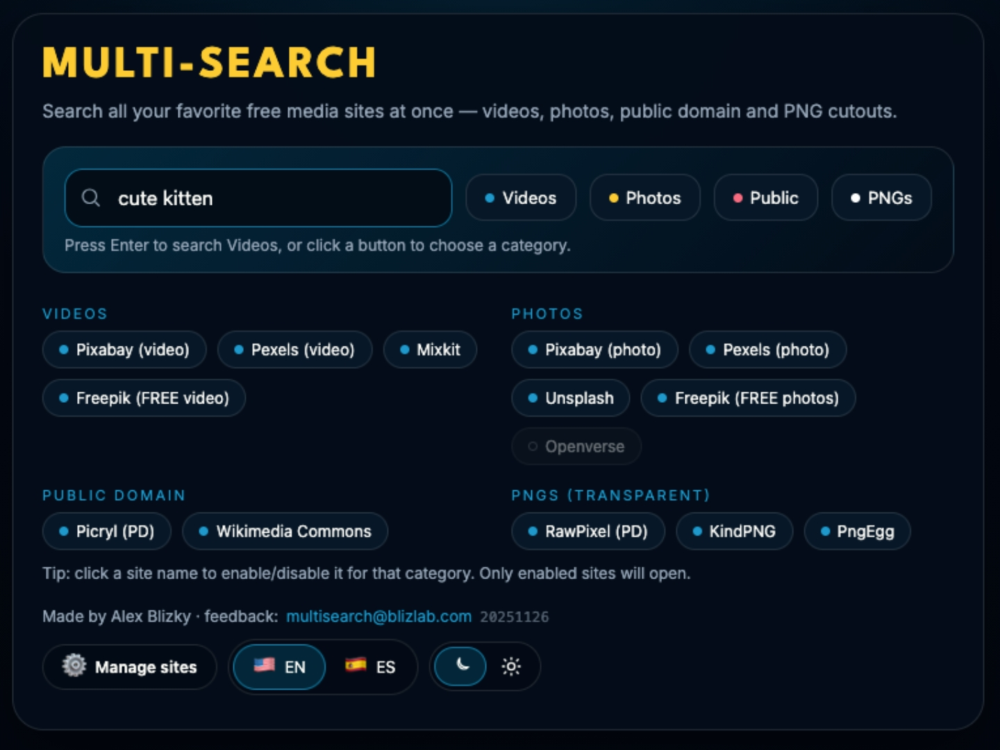

Simple offline web-apps for creators over their deadline… again.
About these tools
These are small single-file web apps that run entirely in your browser.
You can use them directly from this page, or download the HTML files from the
Blizlab tools repository on GitHub
and open them offline.

OctoFind
Multi-site search tool. Open multiple video, photo, and public-domain sites at once.